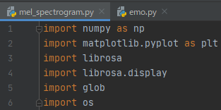
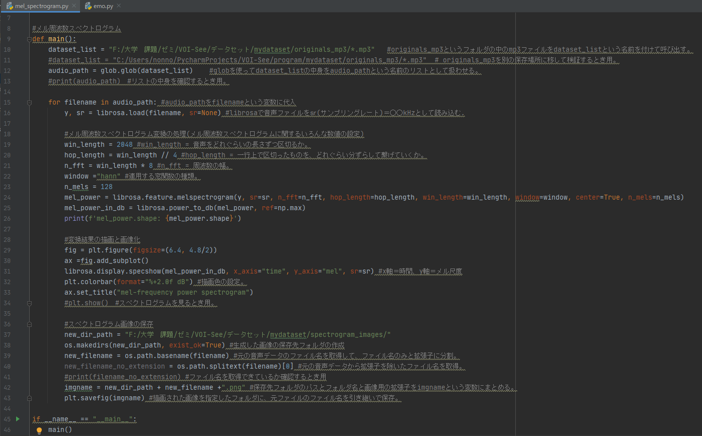
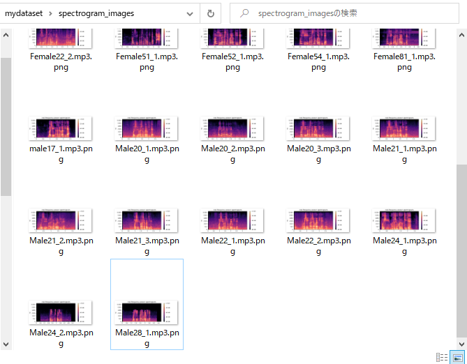

メル周波数スペクトログラム変換プログラム(2021/10/27)
●コードの内容(コメントアウトにて解説あり)
①使用したライブラリ

②コード本文

●出力結果
元の音声データが、指定したフォルダにメル周波数スペクトログラムの画像データとして保存されている。

●次やること
・今回変換したメル周波数スペクトログラムが、逆フーリエ変換したときに元の音に近い形で再現されるかの検証。
・変換したメル周波数スペクトログラムを用いての年齢推定。
●参考にしたサイト
・たくさんあります。URL控えておいたところ見失ったので見つけて後日まとめます。
本日の投稿はここまで。ありがとうございました。